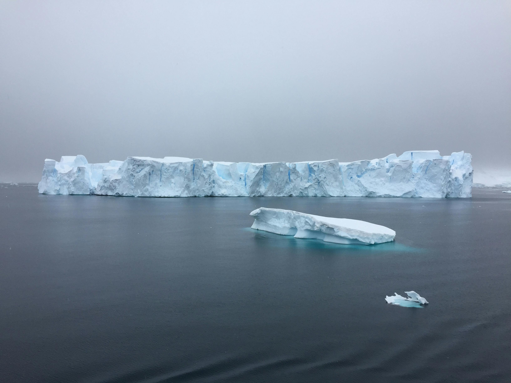
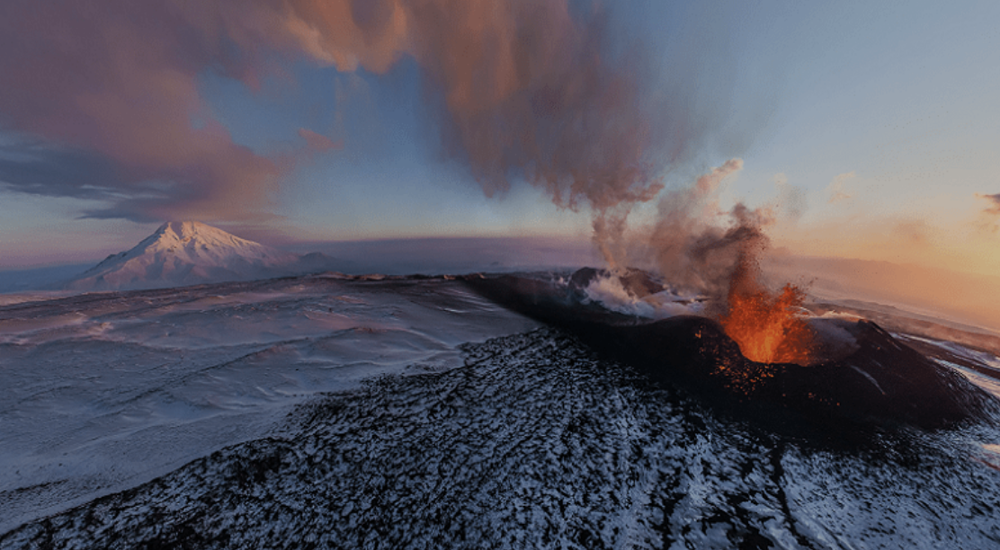
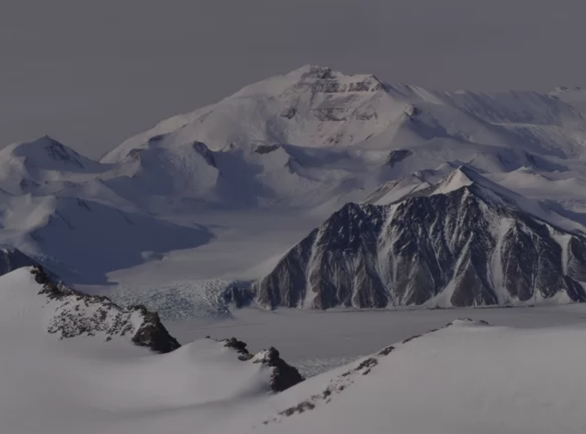
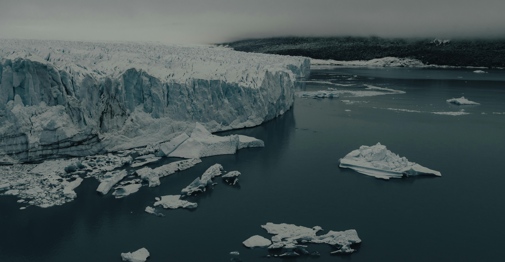

Antarctica
Geography
Antarctica, the southernmost continent, is a land of extremes. Known as the coldest, windiest, and driest place on Earth, it is the largest desert and a hub for scientific exploration. Completely covered in ice and surrounded by frigid oceans, Antarctica is home to unique geological features, rich research opportunities, and an unparalleled glimpse into Earth's climatic history, all while remaining uninhabitable for permanent human settlement.
The Southern Ocean
The Southern Ocean, which surrounds Antarctica, reaches depths of 4,000 to 5,000 meters (13,123 to 16,404 feet). These deep, frigid waters play a critical role in the region's ecosystem and global ocean circulation, influencing climate patterns far beyond the Antarctic region.
Volcanic Activity
Despite being a frozen landscape, Antarctica has volcanic activity. Mount Erebus, located on Ross Island, is the continent's most active volcano and the southernmost active volcano on Earth. Most volcanic and tectonic activity occurs in Lesser Antarctica, which is part of the Pacific “Ring of Fire,” a region of significant geological movement known for earthquakes and volcanic eruptions.
Transantarctic Mountains
The Transantarctic Mountains divide the continent into eastern and western regions, with some peaks reaching elevations of over 4,500 meters (14,764 feet). The ice sheet itself averages 2,000 meters (6,562 feet) in elevation, rising to 4,000 meters (13,123 feet) near the center of the continent. These towering mountain ranges contribute to Antarctica's dramatic and rugged landscape.
Greater Antarctica
East Antarctica, or Greater Antarctica, is the larger and more massive region of the continent. It consists of ancient igneous and metamorphic rocks, making it geologically older than the western region. This vast landmass is roughly the size of Australia and dominates the eastern side of the continent. Covered in thick ice, it would appear as a single, large landmass if the ice were removed.

Lesser Antarctica
West Antarctica, or Lesser Antarctica, is geologically younger and composed mainly of volcanic and sedimentary rocks. This region features numerous mountainous islands and expansive glaciers. If the ice were removed, it would form an archipelago of smaller islands surrounding the central landmass, highlighting its tectonic and volcanic activity as part of the Pacific “Ring of Fire.”

Ice Sheet and Pack Ice
The Antarctic Ice Sheet is the largest single mass of ice on Earth, with some areas reaching thicknesses of up to 3.2 kilometers (2 miles). During the winter months, the continents surface area effectively doubles as pack ice spreads into the surrounding oceans. Ice shelves, such as the Ross and Ronne Ice Shelves, are floating extensions of this massive ice sheet, growing as glaciers flow from the continent's interior toward the coast.
Ecology
Biodiversity
Antarctica, the coldest and most remote continent, supports unique but limited biodiversity. In terms of plant life, this continent is sparse in species, consisting mainly of resilient mosses and lichens that are able thrive in the harsh environment.
The continent is better known for its distinctive animal species, such as emperor penguins, Weddell seals, and Antarctic krill, which form the foundation of the Southern Ocean food web. These species have adapted to the extreme cold, thriving in an environment that few other organisms can withstand.
Click the image below to reveal a fun fact:
Ecosystems
The continent's major ecosystems are as fascinating as they are fragile. Beneath the thick layers of sea ice, marine ecosystems teem with life, playing a critical role in regulating global ocean health and supporting fish, whales, and seabirds. Even the ice sheet itself, which is seemingly inhospitable, is home to extremophiles, which are microorganisms that can survive in sub-zero conditions, offering insights into life in extreme environments.
Conservation
Conservation efforts in Antarctica are pivotal as the continent faces the profound impacts of climate change. Rapidly melting ice caps contribute to rising sea levels and disrupt the delicate balance of ecosystems.
However, it should be noted that Antarctica benefits from protections under the Antarctic Treaty, which preserves its environment and prohibits activities such as mineral exploitation. Continued international cooperation with this treaty is essential to keep safe this unique and critical region of the planet.
Antartica's Culture
Antarctica is a unique continent in that it does not have a native human population, and therefore has no associated cultural attributes.